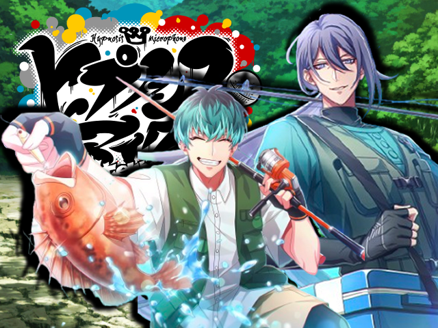
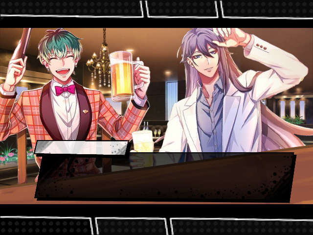
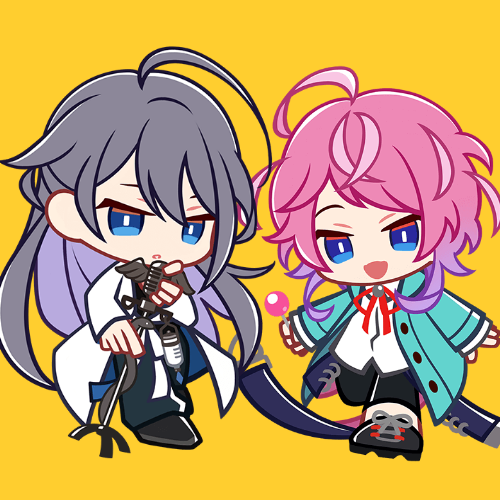

Hypnosis Mic: Fish Rap Battle



Introduccion
"Hypnosis Mic: Fish Rap Battle" es una novela visual inspirada en los eventos del videojuego Hypnosis Mic: Alternative Rap Battle inspirado en el anime del mismo nombre, en donde los personajes Sasara Nurude y Jakurai Jinguji se unen para participar en una competencia de pesca organizada por Chuo-Ku. En esta aventura grafica tendras que ayudar a Sasara y Jakurai a tomar las decisiones corectas para conseguir el increible premio de cupones gratis de ramen! Pero en el camino pueden encontrarse tanto a amigos como obstaculos que les dificultaran llegar a ganar. Elige el mejor camino y gana la competencia! O disfruta ver que bizarros acontecimientos van a complicar a nuestros lideres...
Aventura grafica
Esta aventura visual fue creada usando p5.js, utulizando imagenes oficiales del juego editadas en
ClipStudio,
los dialogos y la historia fue enteramente pensada por ambas integrantes. Se evito el uso de IA en la
creacion
de la parte grafica por los principios de las creadoras, ya que ambas son artistas. El proceso fue lento
pero
muy divertido! Pasando horas en llamada pensando como resolver el codigo y los problemas que se
encontraban.
Integrantes
Liz y Miru se conocieron durante el curso de ingreso, luego de que Miru notara los pines de Hypnosis Mic en la mochila de Liz, y casi al instante se volvieron amigas, unidas por su anime favorito. Por eso, al conocer la tematica de la aventura grafica, no hubo dudas en hacerlo inspirado en Hypnosis Mic, la serie que unio a ambas y las apasiona.

Agustina Linguitano
Tambien llamada Liz. Encargada principalmente de la parte grafica de la novela visual. Sus personajes favoritos son Jakurai y Ramuda.

Florencia Castagnani
Tambien llamada Miru. Encargada principalmente de la programacion de la novela visual. Sus personajes favoritos son Sasara y Kuko